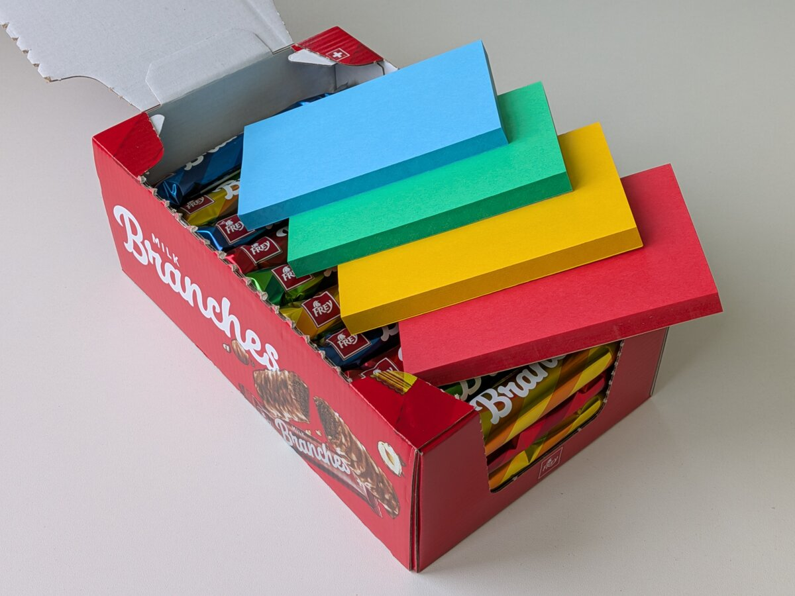
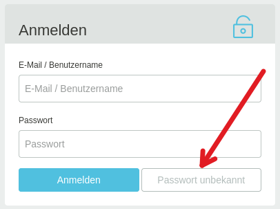
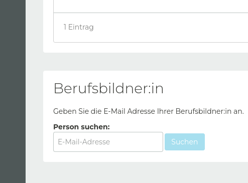

Prüfungskommission 21
<!-- .slide: class="title-layout" --> # Infoveranstaltung<br>für Kandidaten/innen <div class="title-content"> Qualifikationsverfahren 2027<br>Entwickler/in digitales Business </div> --- <!-- .slide: class="content-layout" --> <p class="eyebrow">Vorstellung</p> ## Die wichtigsten Punkte im Überblick. <div class="slide-content"> <ul class="key-points"> <li class="fragment"><h3>10 Arbeitstage im Lehrbetrieb</h3><p>am Stück oder verteilt über maximal 2 Monate von Februar bis Mai</p></li> <li class="fragment"><h3>Übliches Projekt im Arbeitsumfeld</h3><p>formuliert von der verantwortlichen Fachkraft, mit einem Aufwand von 6 bis 7 Tagen für die Realisierung und 3 bis 4 Tagen für die Dokumentation</p></li> <li class="fragment"><h3>Begleitet durch ein Expertenteam aus der Wirtschaft</h3><p>zwei Besuche während der Umsetzung und ein weiterer für Präsentation und Fachgespräch</p></li> <li class="fragment"><h3>Weitere Informationen auf pk21.ch</h3><p> Das Handbuch und die Bewertungskriterien findest Du auf unserer Webseite. Sie sind <strong>Pflichtlektüre!</strong></p></li> </ul> </div> --- <!-- .slide: class="content-layout no-print" --> <p class="eyebrow">Vorstellung</p> ## Für Dich da, während Deines Qualifikationsverfahrens. <div class="slide-content"> <p class="lead">Die PK21 organisiert die <strong>Validierung und Durchführung der IPA</strong> sowie die <strong>Ausstellung des EFZ</strong>.</p> <div class="people-list fragment"> <div> <img src="./assets/vivienne.png" alt="Vivienne" /> <strong>Vivienne Merz</strong>Präsidentin </div> <div> <img src="./assets/claudia.png" alt="Claudia" /> <strong>Claudia Bartholet</strong>Aktuarin </div> <div> <img src="./assets/robin.png" alt="Robin" /> <strong>Robin Bühler</strong>Chefexperte EDB </div> <div> <img src="./assets/barbara.png" alt="Barbara" /> <strong>Barbara Bisko</strong>Chefexpertin Validierung EDB </div> </div> </div> --- <!-- .slide: class="content-layout" --> <p class="eyebrow">Rollen</p> ## Wer was macht. <div class="slide-content"> <div class="image-text"> <div> <dl> <dt><strong>KAND</strong> Kandidierende Person</dt> <dd>Das bist du 😊</dd> <dt><strong>VF</strong> Verantwortliche Fachkraft</dt> <dd>Im Betrieb zuständig für die Begleitung der Kandidierenden.</dd> <dt><strong>HEX</strong> Hauptexperte/in</dt> <dd>Während der Durchführung verantwortlich von Seiten des Kantons.</dd> <dt><strong>CEX</strong> Chefexperte</dt> <dd>Ansprechperson bei Konflikten und Notfällen.</dd> </dl> </div> <figure class="fragment" style="width: 500px; max-width: 100%;"> <img src="./assets/rollen.png" width="768" height="432" style="height: 500px; margin-block-start: -5rem" alt="Diagramm der Rollen"> <figcaption>Diagramm: Rollen</figcaption> </figure> </div> </div> --- <!-- .slide: class="content-layout" --> <p class="eyebrow">Agenda</p> ## Was Dich erwartet. <div class="slide-content"> <div class="image-text"><!-- .element style="grid-template-columns: minmax(0, 2fr) minmax(0, 1fr);" --> <div> <ol class="agenda-list"> <li class="fragment"><h3>Vor dem Start</h3><p>Registrierung, Vorbereitung und Eingabe der IPA</p></li> <li class="fragment"><h3>Während der Durchführung</h3><p>Tägliche Arbeit, Besuche, Dokumentieren und Protokollieren</p></li> <li class="fragment"><h3>Nach der Abgabe</h3><p>Präsentation und Fachgespräch</p></li> <li class="fragment"><h3>Bewertung</h3><p>Bewertung und weitere Schritte</p></li> </ol> </div> <figure style="width: 400px; max-width: 100%;"> <img src="./assets/agenda.jpg" width="768" height="432" style="height: 400px;" alt="Agenda"> <figcaption>Foto von <a href="https://unsplash.com/@lorinboth?utm_source=unsplash&utm_medium=referral&utm_content=creditCopyText">Lorin Both</a> auf <a href="https://unsplash.com/photos/a-clock-hanging-from-the-ceiling-of-a-building-GJ_3j24tT1w?utm_source=unsplash&utm_medium=referral&utm_content=creditCopyText">Unsplash</a></figcaption> </figure> </div> </div> --- <!-- .slide: class="content-layout no-print" --> ## Choco-Clustering <div class="slide-content"> <div class="image-text"><!-- .element style="grid-template-columns: minmax(0, 1.2fr) minmax(0, 1fr);" --> <div style="display: grid; grid-template-columns: 300px 300px; grid-template-rows: 230px 230px;"> <div class="fragment" style="background-color: #fff194; display: flex; align-items: center; justify-content: center; padding: 1em"> <p>Was sind deine <strong>Wünsche</strong> an das Umfeld (z. B. Betrieb, Prüfungskommission)?</p> </div> <div class="fragment" style="background-color: #ff9994; display: flex; align-items: center; justify-content: center; padding: 1em"> <p>Was für <strong>Sorgen</strong> hast du in Bezug auf die IPA?</p> </div> <div class="fragment" style="background-color: #94ff9d; display: flex; align-items: center; justify-content: center; padding: 1em"> <p>Welche <strong>Themen</strong> oder Projekte gibt es bei dir im Betrieb für die IPA?</p> </div> <div class="fragment" style="background-color: #94bdff; display: flex; align-items: center; justify-content: center; padding: 1em"> <p>Was nimmst du dir vor und welche <strong>Ideen</strong> hast du, damit deine IPA zum Erfolg wird?</p> </div> </div> <figure style="width: 600px; max-width: 100%; margin-block-start: 1rem"> <p></p> <figcaption>Foto von Robin Bühler</figcaption> </figure> </div> </div> --- <!-- .slide: class="title-layout section-layout" --> <span class="section-number" aria-hidden="true">01</span> # Vor dem Start <div class="title-content"> Registrierung, Vorbereitung und Eingabe der IPA </div> --- <!-- .slide: class="content-layout" --> <p class="eyebrow">Ablauf</p> ## Die Schritte bis zum Start. <div class="slide-content"> <ol class="timeline"> <li><h3>Registrierung (ab 25.11.)</h3><p>Registriere Dich auf der Prüfungsplattform.</p></li> <li class="fragment"><h3>Eingabe (bis 31.12.)</h3><p>Grobbeschreibung und Startblock eingeben.</p></li> <li class="fragment"><h3>Validierung (ab 1 Monat vor dem Start)</h3><p>Detaillierte Aufgabenstellung ausarbeiten und validieren.</p></li> <li class="fragment"><h3>Freigabe (bis wenige Tage vor dem Start)</h3><p>Der/die VEX gibt Deine IPA zur Umsetzung frei.</p></li> </ol> <aside class="callout">Kommuniziere proaktiv und halte die Termine ein.</aside> </div> --- <!-- .slide: class="content-layout" --> <p class="eyebrow">Aufgaben</p> ## Was Du vor der IPA vorbereitest. <div class="slide-content icon-list"> <div class="icon-list-item fragment"> <img src="../lib/assets/icons/business/fingerprint.svg" alt="Registrierung"> <div> <h3>Registrieren</h3> <p>Ab dem <strong>25. November</strong> kannst Du Dich auf der Prüfungsplattform <a href="https://pkorg.ch">pkorg.ch</a> <strong>registrieren</strong> und Deine <strong>verantwortliche Fachkraft</strong> einladen.</p> </div> </div> <div class="icon-list-item fragment"> <img src="../lib/assets/icons/business/deadline.svg" alt="Termine einhalten"> <div> <h3>Termine einhalten</h3> <p>Notiere Dir die Termine und führe eine Aufgabenliste. Hast Du Deine verantwortliche Fachkraft für den <strong>18. November</strong> aufgeboten?</p> </div> </div> <div class="icon-list-item fragment"> <img src="../lib/assets/icons/education/book-1.svg" alt="Dokumente lesen"> <div> <h3>Dokumente lesen</h3> <p>Lerne die relevanten Dokumente kennen, insbesondere das <strong>Handbuch</strong> und das <strong>Bewertungsformular</strong>, die Du auf unserer Webseite <a href="https://pk21.ch">pk21.ch</a> findest.</p> </div> </div> <div class="icon-list-item fragment"> <img src="../lib/assets/icons/education/jigsaw.svg" alt="Vorbereitung"> <div> <h3>Wissenslücken aufarbeiten</h3> <p>Welche <strong>Projektmethode</strong> passt? Verstehe ich alle <strong>Abläufe</strong>, die meine Abteilung betreffen? Habe ich die <strong>Tools</strong> im Griff?</p> </div> </div> <div class="icon-list-item fragment"> <img src="../lib/assets/icons/education/laptop.svg" alt="Arbeitsumgebung vorbereiten"> <div> <h3>Arbeitsumgebung vorbereiten</h3> <p>Richte deine Arbeitsumgebung für das Projekt ein. Organisiere dir die benötigten <strong>Zugänge</strong> und <strong>Dokumentvorlagen</strong>.</p> </div> </div> <div class="icon-list-item fragment"> <img src="../lib/assets/icons/education/chat-bubble-user-5.svg" alt="Austauschen"> <div> <h3>Austauschen</h3> <p>Tausche dich mit deiner verantwortlichen Fachkraft und deinem Team aus. Kläre offene Fragen und hole dir Feedback.</p> </div> </div> </div> --- <!-- .slide: class="content-layout" --> <p class="eyebrow">Aufgaben</p> ## Wie Du Dich ab dem 25. November registrierst. (1/2) <div class="slide-content"> <div class="image-text"> <div> <ol> <li>Öffne <a href="https://pkorg.ch">pkorg.ch</a></li> <li>Klicke auf "Passwort unbekannt"</li> <li>Gib deine E-Mail-Adresse ein</li> <li>Gib den PIN ein, der dir per E-Mail zugeschickt wurde</li> </ol> <aside class="callout fragment" style="margin-block-start: 1em">Verwende dieselbe E-Mail-Adresse, worüber du die Einladung zur Infoveranstaltung erhalten hast.</aside> </div> <figure style="width: 500px; max-width: 100%;"> <p></p> <figcaption>Screenshot von PkOrg</figcaption> </figure> </div> </div> --- <!-- .slide: class="content-layout" --> <p class="eyebrow">Aufgaben</p> ## Wie Du Dich ab dem 25. November registrierst. (2/2) <div class="slide-content"> <div class="image-text"> <div> <ol start="5"> <li>Scrolle auf der Übersichtsseite ganz nach unten</li> <li>Lade Dein/e BB ein</li> <li>Dein/e BB lädt daraufhin Deine VF ein</li> <li>Zusammen mit Deiner VF gibst du die Grobbeschreibung ein und wählst den Startblock.</li> </ol> </div> <figure style="width: 500px; max-width: 100%;"> <p></p> <figcaption>Screenshot von PkOrg</figcaption> </figure> </div> </div> --- <!-- .slide: class="content-layout" --> <p class="eyebrow">Aufgaben</p> ## Die Suche nach dem passenden Thema. <div class="slide-content"> <div class="two-cols"> <div> <h3>zum Berufsbild passend</h3> <ul> <li>Daten analysieren</li> <li>Evaluation von Schnittstellen und deren Beteiligten</li> <li>Prozesse entwickeln, optimieren und digitalisieren</li> <li>Schulungen entwickeln und durchführen</li> <li>...</li> </ul> </div> <div class="fragment"> <h3>zu Dir passend</h3> <ul> <li>Stärken und Bekanntes berücksichtigen</li> <li>Aufbauend auf bisherigen oder aktuell laufenden Projekten</li> <li>Etwas, das für Dich nicht komplett neu ist</li> <li>Etwas, das Deinen Berufsalltag widerspiegelt</li> <li>...</li> </ul> </div> </div> <div class="fragment"> <h3>was nicht passt</h3> <div class="two-cols"> <div> <ul> <li>Durch dich formulierte Aufgabenstellungen</li> <li>Fiktive Themen</li> <li>Unbekannte Produkte und Methoden</li> </ul> </div> <div> <ul> <li>Zu einfache oder zu komplexe Themen</li> <li>Dokumentation als Hauptfokus</li> </ul> </div> </div> </div> </div> --- <!-- .slide: class="title-layout section-layout" --> <span class="section-number" aria-hidden="true">02</span> # Während der Durchführung <div class="title-content"> Tägliche Arbeit, Besuche, Dokumentieren und Protokollieren </div> --- <!-- .slide: class="content-layout" --> <p class="eyebrow">Ablauf</p> ## Die Schritte bis zur Abgabe. <div class="slide-content"> <ol class="timeline fragment" data-fragment-index="1"> <li><h3>Beginn</h3><p>Du beginnst mit der Umsetzung zum festgelegten Startzeitpunkt, nicht früher.</p></li> <li class="fragment" data-fragment-index="2"><h3>Erstbesuch</h3><p>Der HEX und der NEX besuchen Dich zu einem vereinbarten Termin. Du stellst Deine Planung und erste Ergebnisse vor. Allfällige Fragen werden geklärt.</p></li> <li class="fragment" data-fragment-index="3"><h3>Zwischenbesuch</h3><p>Der HEX und der NEX besuchen Dich erneut, um den Fortschritt zu überprüfen. Du präsentierst bisherige Ergebnisse.</p></li> <li class="fragment" data-fragment-index="4"><h3>Abgabe</h3><p>Du gibst Deine Lieferobjekte fristgerecht <strong>am 10. Tag bis 18:00 Uhr</strong> auf PkOrg ab.</p></li> </ol> <aside class="callout fragment" data-fragment-index="2">Organisiere die Besuchstermine mit allen Beteiligten frühzeitig. <strong>Du bist im Lead!</strong></aside> </div> --- <!-- .slide: class="content-layout" --> <p class="eyebrow">Aufgaben</p> ## Was Du während der Durchführung beachtest. <div class="slide-content icon-list"> <div class="icon-list-item fragment"> <img src="../lib/assets/icons/transportation/direction-sign.svg" alt="Geplantes Vorgehen"> <div> <h3>Geplantes Vorgehen</h3> <p>Halte Dich an das geplante Vorgehen und <strong>dokumentiere Deine Fortschritte nachvollziehbar</strong>. Halte das Arbeitsjournal stets aktuell.</p> </div> </div> <div class="icon-list-item fragment"> <img src="../lib/assets/icons/medical/doctor.svg" alt="Melde Zwischenfälle"> <div> <h3>Melde Unregelmässigkeiten</h3> <p><strong>Melde Zwischenfälle</strong> wie fehlende Ressourcen oder Krankheit umgehend dem/der HEX oder bei vertraulichen Angelegenheiten dem CEX.</p> </div> </div> <div class="icon-list-item fragment"> <img src="../lib/assets/icons/networking/chat-1.svg" alt="Besuchstermine"> <div> <h3>Bereite Besuchstermine vor</h3> <p>Bereite Dich auf die Besuchstermine vor, als hättest Du ein <strong>wichtiges Kundengespräch</strong>. Notiere Dir die relevanten Punkte und Fragen im Voraus.</p> </div> </div> <div class="icon-list-item fragment"> <img src="../lib/assets/icons/education/certificate-2.svg" alt="Quellen"> <div> <h3>Fremdleistungen angeben</h3> <p><strong>Gib alle Fremdleistungen korrekt an.</strong> Dazu gehören die Unterstützung durch Arbeitskollegen/innen, Korrekturlesende und generative Assistenzsysteme (z. B. ChatGPT).</p> </div> </div> <div class="icon-list-item fragment"> <img src="../lib/assets/icons/education/laptop.svg" alt="Abgabe"> <div> <h3>Abgabe üben</h3> <p>Übe die Abgabe Deiner Arbeit über PkOrg frühzeitig. <strong>Der letzte Upload zählt!</strong></p> </div> </div> <div class="icon-list-item fragment"> <img src="../lib/assets/icons/education/important-topics.svg" alt="Unterlagen"> <div> <h3>In Lieferobjekten denken</h3> <p>Die Dokumentation besteht normalerweise aus <strong>verschiedenen Lieferobjekten</strong> statt aus einem einzigen grossen Dokument.</p> </div> </div> </div> --- <!-- .slide: class="content-layout" --> <p class="eyebrow">Generative Assistenzsysteme</p> ## Einsatz von generierten Inhalten <div class="slide-content"> <div class="image-text"> <div> <ul> <li>Hilfen durch künstliche Intelligenz dürfen verwendet werden, sofern sie in der detaillierten Aufgabenstellung unter «Mittel und Methoden» oder im Arbeitsjournal als Fremdleistung aufgeführt sind.</li> <li>Generierte Inhalte müssen klar gekennzeichnet und nachvollziehbar belegt werden, zum Beispiel im Quellenverzeichnis oder in Fussnoten.</li> <li><strong>Die nicht deklarierte oder unreflektierte Nutzung generierter Inhalte führt zu Punktabzug.</strong></li> </ul> </div> <figure style="width: 500px; max-width: 100%;"> <img src="./assets/directions.jpg" width="768" height="432" style="height: 500px; margin-block-start: -5rem" alt="Symbolbild"> <figcaption>Foto von <a href="https://unsplash.com/@jan_huber?utm_source=unsplash&utm_medium=referral&utm_content=creditCopyText">Jan Huber</a> auf <a href="https://unsplash.com/photos/silhouette-of-trees-during-sunset-4MDXq_aqHY4?utm_source=unsplash&utm_medium=referral&utm_content=creditCopyText">Unsplash</a></figcaption> </figure> </div> </div> --- <!-- .slide: class="title-layout section-layout" --> <span class="section-number" aria-hidden="true">03</span> # Nach der Abgabe <div class="title-content"> Präsentation und Fachgespräch </div> --- <!-- .slide: class="content-layout" --> <p class="eyebrow">Ablauf</p> ## Die letzten Meter bis ins Ziel. <div class="slide-content"> <ol class="timeline fragment" data-fragment-index="1"> <li><h3>Vorbereitung</h3><p>Nach der Abgabe bereitest Du die Präsentation und das Fachgespräch vor. Der Besuchstermin ist ein bis zwei Wochen später geplant.</p></li> <li class="fragment" data-fragment-index="2"><h3>Präsentation</h3><p>Du präsentierst Deine Ergebnisse vor der VF, dem HEX und dem NEX.</p></li> <li class="fragment" data-fragment-index="3"><h3>Fachgespräch</h3><p>Während des Fachgesprächs erläuterst Du Deine Vorgehensweise, Entscheidungen und Ergebnisse und beantwortest Fragen des Expertenteams.</p></li> <li class="fragment" data-fragment-index="4"><h3>Ziellinie 🏁</h3><p>Das Ziel ist erreicht. Ende Juni werden die Ergebnisse bekannt gegeben.</p></li> </ol> <aside class="callout fragment" data-fragment-index="2">Die Präsentation ist Deine Show. Währenddessen werden keine Fragen gestellt. Mit den Mitteln und Methoden der Präsentation darfst Du kreativ sein.</aside> </div> --- <!-- .slide: class="content-layout" --> <p class="eyebrow">Präsentation und Fachgespräch</p> ## Wie die Präsentation verläuft. <div class="slide-content"> <div class="image-text"> <div> <ul> <li class="fragment">Du präsentierst Deine Ergebnisse <strong>15 bis 20 Minuten</strong> lang in Mundart oder Schriftsprache.</li> <li class="fragment">Setze Schwerpunkte auf die wichtigsten Erkenntnisse oder Probleme. Lass die Expertinnen und Experten einen <strong>Blick hinter die Kulissen</strong> werfen. Was nach der Abgabe mit Deiner Arbeit passiert ist, wäre eine interessante Anekdote zum Schluss.</li> <li class="fragment">Gestalte die Präsentation <strong>abwechslungsreich</strong>, zum Beispiel mit einer Live-Demonstration.</li> </ul> </div> <figure class="fragment" style="width: 400px; max-width: 100%;"> <figcaption>Foto von <a href="https://unsplash.com/@flipsnack?utm_source=unsplash&utm_medium=referral&utm_content=creditCopyText">Flipsnack</a> auf <a href="https://unsplash.com/photos/a-man-giving-a-presentation-to-a-group-of-people-LUqSTRx3_Ig?utm_source=unsplash&utm_medium=referral&utm_content=creditCopyText">Unsplash</a>, mit künstlicher Intelligenz bearbeitet (Krea 3, Prompt: «Can you replace the presenting person with a 20 years old woman who is standing?»).</figcaption> </figure> </div> </div> --- <!-- .slide: class="content-layout" --> <p class="eyebrow">Präsentation und Fachgespräch</p> ## «Fachsimpeln» über deine Arbeit. <div class="slide-content"> <div class="image-text"> <div> <ul> <li class="fragment">Das Fachgespräch dauert zwischen <strong>30 und 40 Minuten</strong>. Dabei werden <strong>vier Themenkomplexe</strong> behandelt.</li> <li class="fragment">Es geht darum herauszufinden, ob sich mit Dir auf <strong>professionellem Niveau über Deine Arbeit «fachsimpeln»</strong> lässt.</li> <li class="fragment">Dabei gehst Du auf Fragen des Expertenteams ein und ziehst Deine Lieferobjekte zur Veranschaulichung bei.</li> </ul> </div> <figure class="fragment" style="width: 400px; max-width: 100%;"> <figcaption>Foto von <a href="https://unsplash.com/@flipsnack?utm_source=unsplash&utm_medium=referral&utm_content=creditCopyText">Flipsnack</a> auf <a href="https://unsplash.com/photos/a-man-giving-a-presentation-to-a-group-of-people-LUqSTRx3_Ig?utm_source=unsplash&utm_medium=referral&utm_content=creditCopyText">Unsplash</a>, mit künstlicher Intelligenz bearbeitet (Krea 3, Prompt: «Can you replace the presenting person with a 20 years old woman?»).</figcaption> </figure> </div> </div> --- <!-- .slide: class="title-layout section-layout" --> <span class="section-number" aria-hidden="true">04</span> # Bewertung und weitere Schritte <div class="title-content"> Fragen, Anliegen und Diskussion </div> --- <!-- .slide: class="content-layout" --> <p class="eyebrow">Bewertung</p> ## An einem Beispiel erklärt, wie Kriterien funktionieren. <div class="slide-content"> <table style="width: 100%; font-size: 0.95em; line-height: 1.15;" class="fragment"> <tbody> <tr> <th scope="row" style="width: 14%;">A04</th> <th scope="col">Meetings/Workshops planen und moderieren</th> </tr> <tr class="fragment"> <th scope="row">Gütestufe 3</th> <td> <ol> <li>Meetings und Workshops sind geplant (z. B. Ziele, Dauer, Teilnehmende, Ressourcen, Infrastruktur, Budget) und die Notwendigkeit der Teilnehmenden ist begründet.</li> <li>Alle Teilnehmer werden mit Absichtserklärung (z. B. Zielen, Ablauf, Traktanden, Voraussetzungen, benötigte Hilfsmittel) vorgängig eingeladen.</li> <li>Die benötigte Infrastruktur (z. B. Raum, Technik) wurde vorbereitet und während der Durchführung professionell bedient (z. B. Vollbildmodus bei Präsentationen, Anpassen der Lichtverhältnisse, angepasste Sprechlautstärke).</li> <li>Eine auf die Teilnehmer abgestimmte Moderationstechnik wird professionell eingesetzt.</li> </ol> </td> </tr> <tr class="fragment"> <th scope="row">Gütestufe 2</th> <td>Drei Punkte sind erfüllt.</td> </tr> <tr class="fragment"> <th scope="row">Gütestufe 1</th> <td>Zwei Punkte sind erfüllt.</td> </tr> <tr class="fragment"> <th scope="row">Gütestufe 0</th> <td>Kein oder ein Punkt ist erfüllt.</td> </tr> </tbody> </table> </div> --- <!-- .slide: class="content-layout" --> <p class="eyebrow">Bewertung</p> ## Ein Hauptdokument, das auf andere Dokumente verweist. <div class="slide-content"> <div class="two-cols"> <div> <h3>Auszug aus Kriterium<br>C02 Struktur und Inhalt</h3> <blockquote> <p class="fragment"> 1) In einer Projektübersicht sind Zielsetzung, Rahmenbedingungen, Anforderungen, Abgrenzungen, Anspruchsgruppen und Lieferobjekte des Projekts beschrieben. </p> <p class="fragment"> 2) Die Projektübersicht weist eine logische und kohärente Struktur mit einer nummerierten Gliederung in Haupt- und Unterkapitel auf.<br>[...] </p> </blockquote> </div> <div class="document-map fragment" role="group" aria-label="Projektübersicht mit Verweisen auf fünf Lieferobjekte"> <svg class="document-map-links" viewBox="0 0 520 360" aria-hidden="true"> <path d="M260 180 L260 50.4 M260 180 L438.048 139.968 M260 180 L370.032 284.832 M260 180 L149.968 284.832 M260 180 L81.952 139.968" /> </svg> <figure class="document-map-node" style="--x: 50%; --y: 14%;"> <figcaption>Arbeitsjournal.pdf</figcaption> </figure> <figure class="document-map-node" style="--x: 84.24%; --y: 38.88%;"> <figcaption>Wiki-Seite.html</figcaption> </figure> <figure class="document-map-node" style="--x: 71.16%; --y: 79.12%;"> <figcaption>Mindmap.jpg</figcaption> </figure> <figure class="document-map-node" style="--x: 28.84%; --y: 79.12%;"> <figcaption>Rohdaten.csv</figcaption> </figure> <figure class="document-map-node" style="--x: 15.76%; --y: 38.88%;"> <figcaption>Ausgabedaten.csv</figcaption> </figure> <figure class="document-map-node document-map-main"> <img src="../lib/assets/icons/education/book-1.svg" alt=""> <figcaption>Projektübersicht.pdf</figcaption> </figure> <div class="document-map-bundle"> <svg class="document-map-brace" viewBox="0 0 520 24" preserveAspectRatio="none" aria-hidden="true"> <path d="M1 1 Q1 12 24 12 H236 Q260 12 260 23 Q260 12 284 12 H496 Q519 12 519 1" /> </svg> <figure class="document-map-archive"> <figcaption>Jane-Doe_Beispiel-AG_IPA_Abgabe.zip</figcaption> </figure> </div> </div> </div> </div> --- <!-- .slide: class="content-layout" --> <p class="eyebrow">Bewertung</p> ## Wie Du mit den Kriterien arbeitest. <div class="slide-content icon-list"> <div class="icon-list-item fragment"> <div> <h3>Nachweise</h3> <p>Überlege Dir für jedes Kriterium, in welchem Lieferobjekt die geforderte Arbeit <strong>nachgewiesen</strong> ist.</p> </div> </div> <div class="icon-list-item fragment"> <div> <h3>Qualitätskontrolle</h3> <p>Überprüfe <strong>regelmässig</strong>, ob Du alle Vorgaben des Handbuchs, der Kriterien und der Aufgabenstellung einhältst.</p> </div> </div> <div class="icon-list-item fragment"> <div> <h3>Nachfragen</h3> <p>Nutze die Besuchstermine, um offene Fragen zu den Kriterien <strong>gezielt zu klären</strong> und ein gemeinsames Verständnis zu entwickeln.</p> </div> </div> <div class="icon-list-item fragment"> <div> <h3>Gewichtung</h3> <p>Gewisse Kriterien haben eine höhere Gewichtung bei der Bewertung. Achte darauf, diesen Kriterien <strong>besondere Aufmerksamkeit</strong> zu schenken.</p> </div> </div> <div class="icon-list-item fragment"> <div> <h3>Fallnote</h3> <p>Bei einer Note unter 4.0 muss die IPA wiederholt werden.</p> </div> </div> </div> --- <!-- .slide: class="content-layout" --> <p class="eyebrow">Bewertung</p> ## Berechnung der IPA-Note <div class="slide-content"> <dl class="metrics"> <div><dt>Ausführung und Resultat der Arbeit</dt><dd class="metric-value">50%</dd><dd>Bewertung der Fachkompetenz (A) sowie des Projektmanagements und des Arbeitsjournals (B)</dd></div> <div><dt>Dokumentation der Lieferobjekte<br></dt><dd class="metric-value">20%</dd><dd>Bewertung der Dokumentation (C)</dd></div> <div><dt>Präsentation und Fachgespräch</dt><dd class="metric-value">30%</dd><dd>Bewertung der Präsentation (D) und des Fachgesprächs (E)</dd></div> </dl> </div> --- <!-- .slide: class="content-layout" --> <p class="eyebrow">Allgemein</p> ## Die IPA ist vorbei. Wie geht's weiter? <div class="slide-content"> <div class="image-text"> <div> <ul> <li class="fragment">Die Note ist <strong>geheim</strong>, bis sie durch die Notenkonferenz und den Chefexperten festgesetzt wurde.</li> <li class="fragment"><strong>Ende Juni</strong> erhältst Du das Resultat Deines Qualifikationsverfahrens per Post. Sorge dafür, dass die beim MBA hinterlegte Adresse aktuell ist.</li> </ul> </div> <figure style="width: 400px; max-width: 100%;"> <figcaption>Foto von <a href="https://unsplash.com/@vmotionpics?utm_source=unsplash&utm_medium=referral&utm_content=creditCopyText">Vishal Mehta</a> auf <a href="https://unsplash.com/photos/silhouette-of-man-on-top-of-mountain-SADByE9u66o?utm_source=unsplash&utm_medium=referral&utm_content=creditCopyText">Unsplash</a></figcaption> </figure> </div> </div> --- <!-- .slide: class="title-layout closing-layout" --> # Deine Fragen?<br>Viel Erfolg im QV27! <div class="title-content"> <p>Wir freuen uns auf eine tolle Zusammenarbeit auf Augenhöhe.<br>Kontakt zu Robin Bühler: <a href="mailto:robin.buehler@pk21.ch">robin.buehler@pk21.ch</a> oder <a href="tel:+41445200699">+41 44 520 06 99</a></p> <a class="contact-link" href="https://pk21.ch">pk21.ch</a> </div>